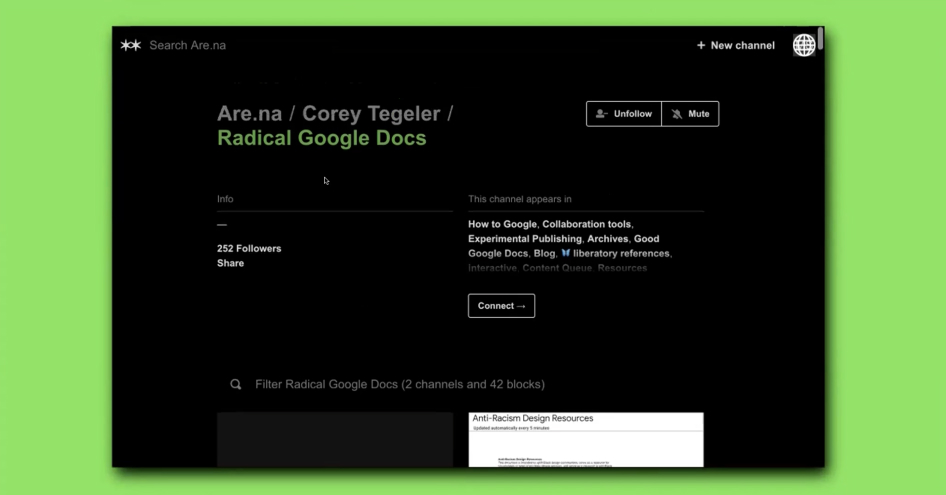

Mindy Seu is a designer and researcher. She holds an MDes from Harvard's Graduate School of Design and BA in Design Media Arts from University of California, Los Angeles. As a fellow at the Berkman Klein Center for the Internet and Society at Harvard Law School, she created an archive of cyberfeminism. She has also been a fellow at the Internet Archive, co-organizing the Arts Track of the inaugural Decentralized Web Summit. Formerly she was a designer on 24's Interactive Media team and the Museum of Modern Art's in-house design studio. She has given lectures and workshops at CalArts, Parsons, Pratt, RISD, Berkeley Art Museum, and A-B-Z-TXT, among others. Seu joined the faculty of California College of the Arts in 2016, and Mason Gross School of the Arts and Yale's School of Art in 2019.
